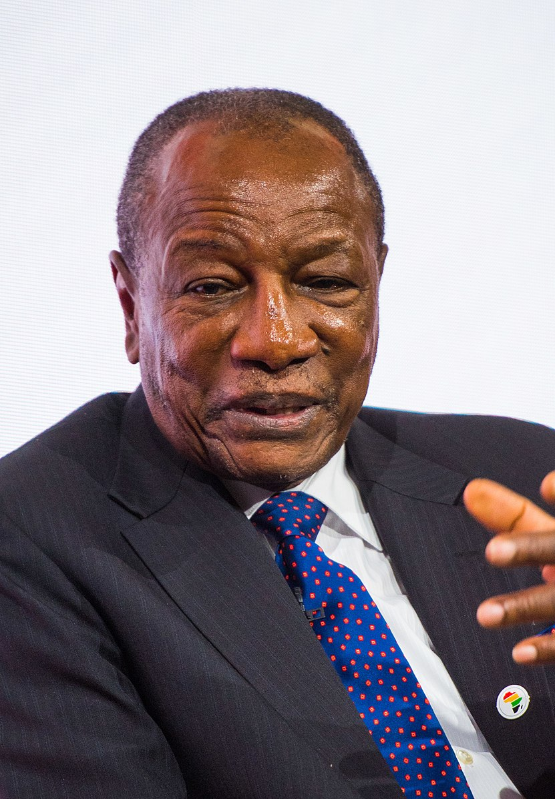

REPUBLIC OF GUINEA
"Work, Justice, Solidality"
FIRST PRESIDENT
- Ahmed Sékou Touré
- Political Party: P.D.G.-R.D.A.
- In Office From: 2 October 1958.
- In Office until: 26 March 1984.
- Born: 9 January 1922.
- Died: 26 March 1984.
- Aged: 62 Years Old.
Interim Predident
- Louis Lansana Beavogui
- Political Party: P.D.G.-R.D.A.
- In Office From: 2 November 1991.
- In Office Until: 2 January 2002.
- Born: 28 December 1923.
- Died: 19 August 1984.
- Aged: 68 Years Old.
SECOND PRESIDENT

- Lansana Conté.
- Political Party: P.U.P.
- In Office From: 5 April 1984.
- In Office Until: 22 December 2008.
- Born: 30 November 1934 .
- Died: 22 December 2008
- Aged: 74 Years Old.
THIRD PRESIDENT

- Moussa Dadis Camara.
- Political Party: Military
- In Office From: 24 December 2008.
- In Office Until: 15 January 2010.
- Born: 1 January 1964.
- Died: 11 March 2022.
- Aged: 85 Years Old.
Acting President
- Sékouba Konaté
- Political Party: Military
- In Office From: 23 September 2011.
- In Office Until: 28 October 2014.
- Born: 6 June 1964.
- Died: 28 October 2014.
- Aged: 77 Years Old.
FOURTH PRESIDENT

- Alpha Condé
- Political Party: R.P.G.
- In Office From: 21 December 2010.
- In Office Until: 5 September 2021 [Deposed in a Coup].
- Born: 4 March 1938.
- Aged: 86 Years Old.
Interim President_ Incumbent
- Mamady Doumbouya.
- Political Party: Military
- In Office From: 1 October 2021.
- In Office Until: Present.
- Born: 4 March 1980.
- Aged: 43 Years Old.